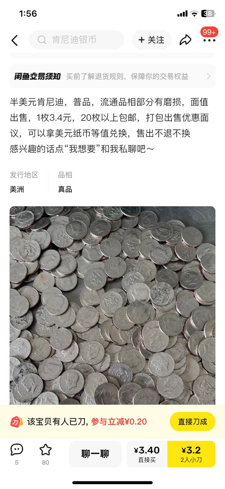

麦片
@maipianaini0930
千禧年以后彻底没意思了，签证是为了限制流动和反移民应运而生的东西，恐怖主义横行的时期过去以后再也没有一个理想的、离家出走的孩子和伴侣坐船就能去纽约去巴西开辟生活的年代了

麦片
@maipianaini0930
呃
60年前50美分够你吃个加满料的推车热狗（酸菜、黄芥末、面包皮烤的又脆又香）往返地铁去coney island转转
简直不敢想象，我特别怀念二战结束后15到50年那段日子。但当时的人也有属于那一代的烦恼，那就是核战争。但现在又未尝能不担心呢，哈梅内伊和金正恩两个逼 https://t.co/uYC0v9WHFN